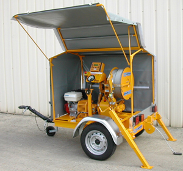
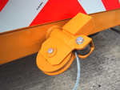
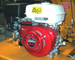
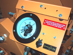
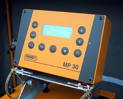

CEVAM |
Matériels pour
la Pose de Câbles
|
||
TL 2019DR - 520/8 |
TREUIL CABESTAN MECANIQUE |
|||
| DESCRIPTIF TECHNIQUE |
|
|||
|
|

|
|||
|

|

|
|||
|

|
||||
| OPTIONS | ||||
| - Enregistreur
électronique MP30 permettant l'arrêt
du tirage à la force programmée. Affichage permanent de :l'effort de tirage, la longueur tirée, la vitesse de tirage et la force programmée. - Pré équipement pour recevoir un enregistreur. - Commande d'arrêt à distance. |

|
|||
Treuil-cabestan sur châssis-remorque destiné à la pose
de câbles souterrains et au sous-tubage.
Tous travaux de levage ou d'auto-halage ne sont pas autorisés au moyen de ce
treuil-cabestan.
Pour toute autre application non décrite ci-dessus, veuillez nous consulter.
Système à double cabestan permettant la traction à vitesse et force
constantes.
Transmission mécanique entraînée par moteur à essence.
Commande par levier de vitesses et arrêt d'urgence; réglage de la vitesse du
treuil-cabestan par accélération du moteur.
Réducteur à engrenages à 2 vitesses progressives d'enroulement, 2 vitesses progressives
de déroulement et 1 position neutre.
Enroulement et emmagasinage automatique du câble sur la bobine.
Déroulement du câble stoppé en cas d'arrêt de la traction sur le câble.
Dynamomètre avec limiteur de force ajustable commandant l'arrêt automatique
de la traction en cas de surcharge.
Entrée du câble dans le treuil-cabestan par une chape pivotante.
Remorque à 1 essieu à suspension élastique.
Timon de remorque, réglable en hauteur, avec accouplement à oeillet.
|
1e vitesse
|
2e vitesse
|
|
| Force de traction maximale * |
2000 kp
|
1000 kp
|
| Vitesse du câble * |
12 m/min
|
23 m/min
|
| Vitesse maximale de déroulement du câble * |
m/min
|
80 m/min
|
|
Ø 7 mm
|
Ø 8 mm
|
|
| Longueur maximale du câble pour type TL 2422 DRHZ-1200/8 |
620 m
|
500 m
|
| Charge de rupture minimale du câble |
3300 daN
|
4400 daN
|
| Masse de 100 m de câble |
21 Kg
|
26 Kg
|